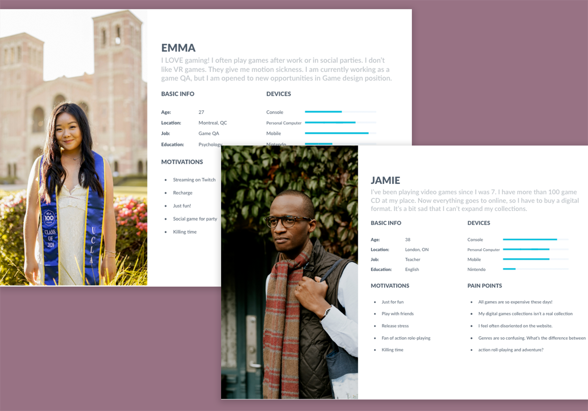
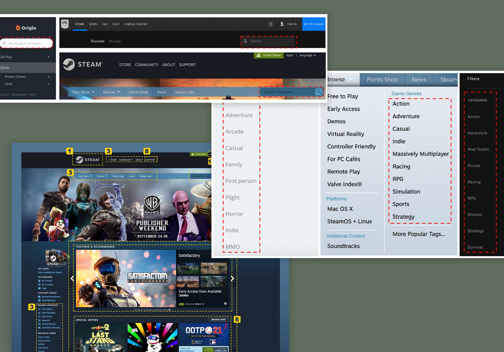
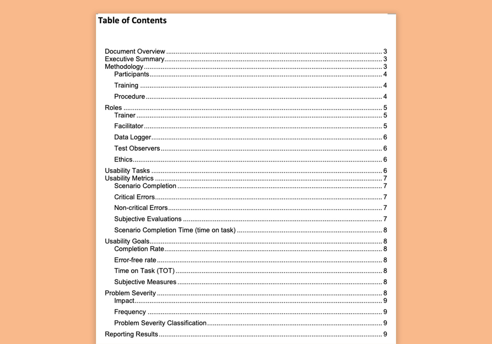
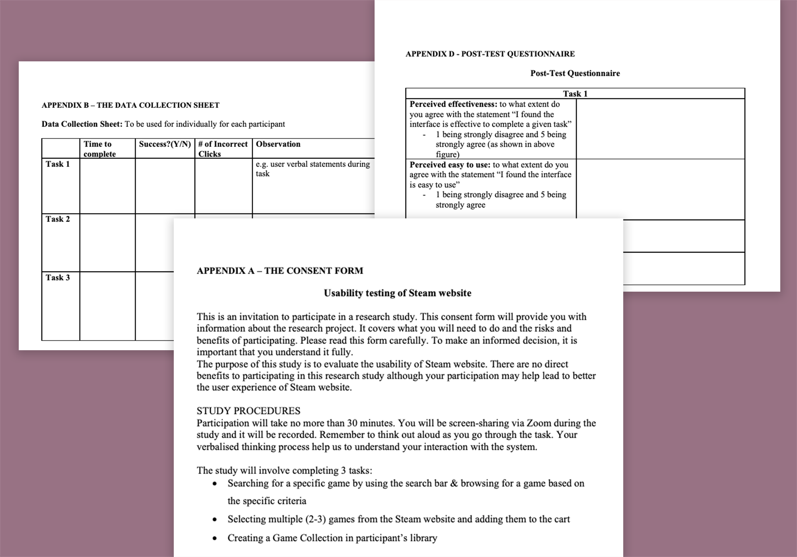

Evaluate the current issues
Target population
This usability testing target population is the younger
generation who are currently between 18-39 years old and own a
personal computer to enjoy gaming. According to the sales,
demographic and usage data of 2018 from the Entertainment
Software Association, the average gamer is 34 years old. Based
on the same source of data, the main device to play a game is a
personal computer (41%), followed by smartphone (36%) and
dedicated game console (36%). Based on the target user group, we
built two personas for this project.


IA & Competitive analysis
And then I conducted Competitive analysis on generalized
topologies, content and IA of competitors(Origin and Epic games)
along with Steam website.
As their main goal is to sell games, “Store” is placed on the
very first of the navigation menu on three websites. And as all
three companies have the standalone launcher, there is a
CTA(Click-To-Action) button to download a launcher. In addition,
to help users to find a game from tons of products, games are
categorized by various criteria, but three companies have a
filtering option by genre.
Cognitive Walkthrough and Heuristic Evaluation
Before we conducted usability testings with users, we had two
usability evaluation sessions: heuristic evaluation and cognitive
walkthrough. Each team member, including myself, conducted these two
testings individually and have findings aggregated.
For the heuristic evaluation, we evaluated the system based on
Jakob Nielsen's 10 heuristics
and used the tool "Heurio" which
helps us to make comments on the website that we evaluate. When
evaluating heuristics of the website, we used severity ratings and
added detailed desciptions to share findings with the team. This
allowed us to assess the various problems easily even if we have not
found them in our own evaluation session.
And for the cognitive walkthrough, we made a template on Google docs
and aggregated findings there. To conduct a cognitive walkthrough,
first, we defined 6 specific steps of purchasing a game and all 4
questions were answered in each step.
We found too many problems!
After completing the above steps, we found TOO MANY USABILITY
PROBLEMS! 😱 Steam's IA is awful (it has two navigation bars!), the
user experience is horrible (The only way to you continue shopping
is to go back to the home page and resume the whole process), and is
cluttered, chaotic and otherwise distracting interfaces! (Too many
visual contents pull users' working memory)
As purchasing a game and organizing game collections are the main
purpose of using a digital game distribution platform for users, we
decided to improve the user experience from visiting Steam website
to completing order.
Communicate, don't
Decorate
Plan UX research
Usability testing plan
Before we conduct usability testing, we develop the test plan
that includes scope, purpose, schedule, sessions, participants,
scenarios and metrics. Our testing plan is built on the template
from
usability.gov
The main scenario is to purchase a game, and the scenario
consists of 6 tasks. During the test, I will measure "successful
task completion", "Critical errors", "Time on task" and
"perceived ease of use" After users complete tasks that we ask,
they will be asked to have a 15-min semi-structured interview to
further understand their subjective feedback, likes, dislikes
and recommendations.


Prepare testing materials
To conduct a sucessful usability test, we prepared all the
necessary testing materials. The test plan includes research
questions, usability goals and metrics, task description,
observer guidelines, test script, user introduction, data
collection sheet(observation), pre-test and post-test
questionnaire.
The full document is available 👉 👉 👉
HERE! 👈 👈 👈
Conduct testings
First, we ran the mock usability test
Even though we prepared the comprehensive test plan, we wanted to
make sure that our test materials are optimized to solicit users'
feedback and assess their performance during the test. Moreover, we
believed that conducting the mock usability test helps us be trained
as test facilitators and observers. This step allowed us to refine
the test materials again so that we valued every single time that
participants were willing to take them out of their day.
Then we conducted the actuall usability test with 3 participants
We conducted the usability testing with three participants. All
sessions were dome remotely via zoom. After the testings, we also
wrote up the final report in two different formats: the word
document and presentation.
Here are the full version of 👉
the word document 👈 and
👉 presentation
👈(Please click to download!)
Recommendations for improvement
Based on the findings from UX testings and evaluation, we drew the
recommendations:
1. Allowing the user to select multiple games at once and add them
to the cart
2. Making the Call to Action of “Continue Shopping” to stand out
3. Modify the user path of the “Continue Shopping” button; allow the
user to go back to the search results page instead of the homepage
4. Implementing the two most frequently violated Neilsen’s
heuristics throughout the website (H2-4: Consistency and Standards &
H2-8: Aesthetics and minimalistic design)
5. Make the terminology used to “Checkout” the games more familiar
to a first-time user (as it currently uses “Purchase for myself”,
deviating from industry standards)
6. Make the tags/filters to narrow the search easily findable
7. Add a button on the “Library” page to create a collection
8. Provide an instruction as to how the user can create a collection
& a shelf from the “Collection” tab
Redesign
Then I created the hi-fi prototypes to redesign the steam!
First, the website is redesigned by considering the widescreen and
the font size becomes bigger as some users complained about it.
Visual contents are now organized to increase the readability of the
website and some filters that are not widely used are hidden to
avoid any cognitive overload. All important information that users
might want to know are displayed but on more well-organized and
intuitive interfaces.
Reflections
The usability testing is crucial
Critical to a project’s success is empathizing with the users so
that we can fully understand and solve their problems. Refining
the prototype with product validation allowed me to analyze such
perspectives closely. A major part of my role in this project was
research planning and documentation. I learned to re-frame the
questions when the team encountered a roadblock related to users
being unable to complete certain validation tasks.
Be mindful with the discrepancy between user ratings and their
performance
"I don't think it's easy to use, but someone else think it's
easy".
Some users gave subjective feedback that didn’t truly reflect
their actual testing experience. Even if a user had poor
completion time and continuously met errors in the prototype, they
still gave it an overall higher rating. As a UX Researcher, I had
to prompt the users to explain why they were evaluating the
product in a certain way. I also had to analyze and improve the
testing script so that it focused more on their actual experience.
Some UX testing software will increase the validity and accuracy
As I was analyzing the recorded testing sessions, it was
interesting to manually study the user’s mouse movement data which
revealed the user’s specific click path. This insight was an
important finding for our next iteration as I learned more about
the customer’s as-is journey. In the future, I hope we have
funding to incorporate Hotjar or a mouse movement tracking tool.